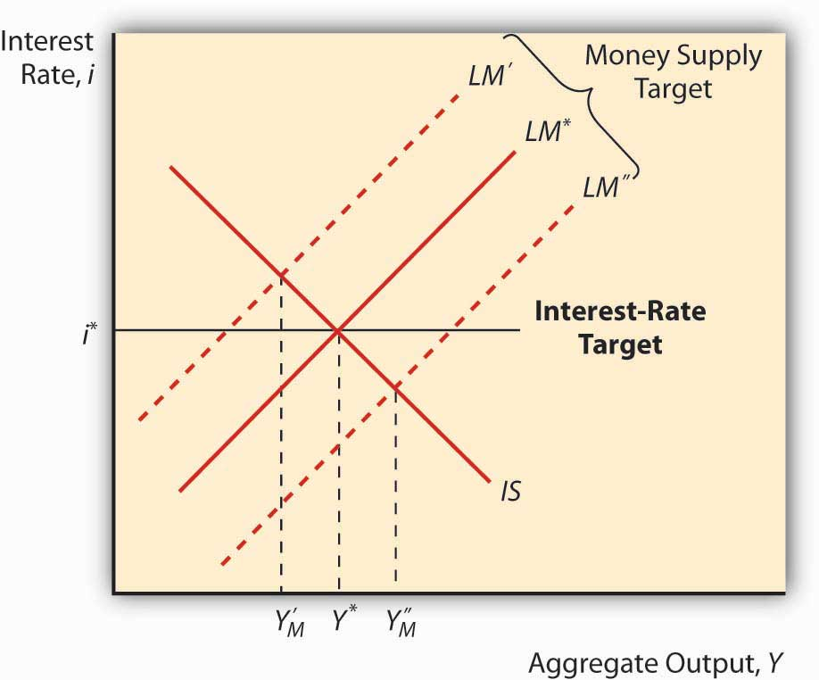
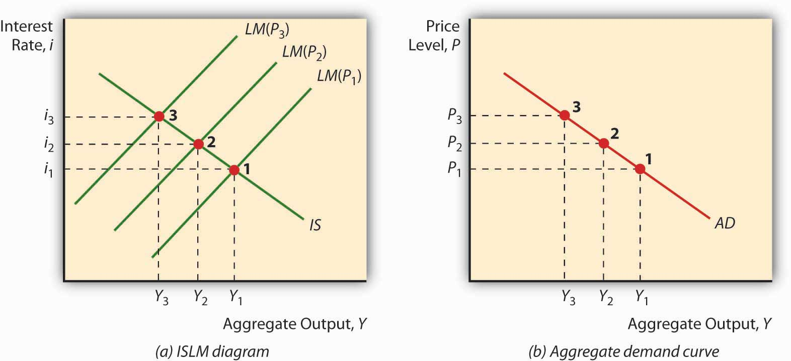

By the end of this chapter, students should be able to:
Policymakers can use the IS-LM model developed in Chapter 21 "IS-LM"to help them decide between two major types of policy responses, fiscal (or government expenditure and tax) or monetary (interest rates and money). As you probably noticed when playing around with the IS and LM curves at the end of the previous chapter, their relative positions matter quite a bit for interest rates and aggregate output. Time to investigate this matter further.
The LM curve, the equilibrium points in the market for money, shifts for two reasons: changes in money demand and changes in the money supply. If the money supply increases (decreases), ceteris paribus, the interest rate is lower (higher) at each level of Y, or in other words, the LM curve shifts right (left). That is because at any given level of output Y, more money (less money) means a lower (higher) interest rate. (Remember, the price level doesn’t change in this model.) To see this, look at Figure 22.1 "Effect of money on interest rates when output is constant".
Figure 22.1 Effect of money on interest rates when output is constant

An autonomous change in money demand (that is, a change not related to the price level, aggregate output, or i) will also affect the LM curve. Say that stocks get riskier or the transaction costs of trading bonds increases. The theory of asset demand tells us that the demand for money will increase (shift right), thus increasing i. Interest rates could also decrease if money demand shifted left because stock returns increased or bonds became less risky. To see this, examine Figure 22.2 "Effect of an autonomous change in money demand when output is constant". An increase in autonomous money demand will shift the LM curve left, with higher interest rates at each Y; a decrease will shift it right, with lower interest rates at each Y.
Figure 22.2 Effect of an autonomous change in money demand when output is constant

The IS curve, by contrast, shifts whenever an autonomous (unrelated to Y or i) change occurs in C, I, G, T, or NX. Following the discussion of Keynesian cross diagrams in Chapter 21 "IS-LM", when C, I, G, or NX increases (decreases), the IS curve shifts right (left). When T increases (decreases), all else constant, the IS curve shifts left (right) because taxes effectively decrease consumption. Again, these are changes that are not related to output or interest rates, which merely indicate movements along the IS curve. The discovery of new caches of natural resources (which will increase I), changes in consumer preferences (at home or abroad, which will affect NX), and numerous other “shocks,” positive and negative, will change output at each interest rate, or in other words shift the entire IS curve.
We can now see how government policies can affect output. As noted above, in the short run, an increase in the money supply will shift the LM curve to the right, thereby lowering interest rates and increasing output. Decreasing the MS would have precisely the opposite effect. Fiscal stimulus, that is, decreasing taxes (T) or increasing government expenditures (G), will also increase output but, unlike monetary stimulus (increasing MS), will increase the interest rate. That is because it works by shifting the IS curve upward rather than shifting the LM curve. Of course, if T increases, the IS curve will shift left, decreasing interest rates but also aggregate output. This is part of the reason why people get hot under the collar about taxes.See, for example, www.nypost.com/p/news/opinion/opedcolumnists /soaking_the_rich_AW6hrJYHjtRd0Jgai5Fx1O (Of course, individual considerations are paramount!)www.politicususa.com/en/polls-taxes-deficit. Note that the people supporting tax increases typically support raising other people’s taxes: “The poll also found wide support for increasing taxes, as 67% said the more high earners income should be subject to being taxed for Social Security, and 66% support raising taxes on incomes over $250,000, and 62% support closing corporate tax loopholes.”
During financial panics, economic agents complain of high interest rates and declining economic output. Use the IS-LM model to describe why panics have those effects.
The LM curve will shift left during panics, raising interest rates and decreasing output, because demand for money increases as economic agents scramble to get liquid in the face of the declining and volatile prices of other assets, particularly financial securities with positive default risk.
Figure 22.3 "Predicted effects of changes in major macroeconomic variables"summarizes.
Figure 22.3 Predicted effects of changes in major macroeconomic variables

Describe Hamilton’s Law (née Bagehot’s Law) in terms of the IS-LM model. Hint: Hamilton and Bagehot argued that, during a financial panic, the lender of last resort needs to increase the money supply by lending to all comers who present what would be considered adequate collateral in normal times.
During financial panics, the LM curve shifts left as people flee risky assets for money, thereby inducing the interest rate to climb and output to fall. Hamilton and Bagehot argued that monetary authorities should respond by nipping the problem in the bud, so to speak, by increasing MS directly, shifting the LM curve back to somewhere near its pre-panic position.
The IS-LM model has a major implication for monetary policy: when the IS curve is unstable, a money supply target will lead to greater output stability, and when the LM curve is unstable, an interest rate target will produce greater macro stability. To see this, look at Figure 22.4 "Effect of IS curve instability" and Figure 22.5 "Effect of LM curve instability". Note that when LM is fixed and IS moves left and right, an interest rate target will cause Y to vary more than a money supply target will. Note too that when IS is fixed and LM moves left and right, an interest rate target keeps Y stable but a money supply target (shifts in the LM curve) will cause Y to swing wildly. This helps to explain why many central banks abandoned money supply targeting in favor of interest rate targeting in the 1970s and 1980s, a period when autonomous shocks to LM were pervasive due to financial innovation, deregulation, and loophole mining. An important implication of this is that central banks might find it prudent to shift back to targeting monetary aggregates if the IS curve ever again becomes more unstable than the LM curve.
Figure 22.4 Effect of IS curve instability

Figure 22.5 Effect of LM curve instability
As noted in Chapter 21 "IS-LM", the policy power of the IS-LM is severely limited by its short-run assumption that the price level doesn’t change. Attempts to tweak the IS-LM model to accommodate price level changes led to the creation of an entirely new model called aggregate demand and supply. The key is the addition of a new concept, called the natural rate level of outputThe rate of output at which the price level has no tendency to rise or fall., Ynrl, the rate of output at which the price level is stable in the long run. When actual output (Y*) is below the natural rate, prices will fall; when it is above the natural rate, prices will rise.
The IS curve is stated in real terms because it represents equilibrium in the goods market, the real part of the economy. Changes in the price level therefore do not affect C, I, G, T, or NX or the IS curve. The LM curve, however, is affected by changes in the price level, shifting to the left when prices rise and to the right when they fall. This is because, holding the nominal MS constant, rising prices decrease real money balances, which we know shifts the LM curve to the left.
So suppose an economy is in equilibrium at Ynrl, when some monetary stimulus in the form of an increased MS shifts the LM curve to the right. As noted above, in the short term, interest rates will come down and output will increase. But because Y* is greater than Ynrl, prices will rise, shifting the LM curve back to where it started, give or take. So output and the interest rate are the same but prices are higher. Economists call this long-run monetary neutrality.
Fiscal stimulus, as we saw above, shifts the IS curve to the right, increasing output but also the interest rate. Because Y* is greater than Ynrl, prices will rise and the LM curve will shift left, reducing output, increasing the interest rate higher still, and raising the price level! You just can’t win in the long run, in the sense that policymakers cannot make Y* exceed Ynrl. Rendering policymakers impotent did not win the IS-LM model many friends, so researchers began to develop a new model that relates the price level to aggregate output.
Under the gold standard (GS), money flows in and out of countries automatically, in response to changes in the price of international bills of exchange. From the standpoint of the IS-LM model, what is the problem with that aspect of the GS?
As noted above, decreases in MS lead to a leftward shift of the LM curve, leading to higher interest rates and lower output. Higher interest rates, in turn, could lead to a financial panic or a decrease in C or I, causing a shift left in the IS curve, further reducing output but relieving some of the pressure on i. (Note that NX would not be affected under the GS because the exchange rate was fixed, moving only within very tight bands, so a higher i would not cause the domestic currency to strengthen.)
Imagine a fixed IS curve and an LM curve shifting hard left due to increases in the price level, as in Figure 22.6 "Deriving the aggregate demand curve". As prices increase, Y falls and i rises. Now plot that outcome on a new graph, where aggregate output Y remains on the horizontal axis but the vertical axis is replaced by the price level P. The resulting curve, called the aggregate demand (AD) curve, will slope downward, as below. The AD curve is a very powerful tool because it indicates the points at which equilibrium is achieved in the markets for goods and money at a given price level. It slopes downward because a high price level, ceteris paribus, means a small real money supply, high interest rates, and a low level of output, while a low price level, all else constant, is consistent with a larger real money supply, low interest rates, and kickin’ output.
Figure 22.6 Deriving the aggregate demand curve
Because the AD curve is essentially just another way of stating the IS-LM model, anything that would change the IS or LM curves will also shift the AD curve. More specifically, the AD curve shifts in the same direction as the IS curve, so it shifts right (left) with autonomous increases (decreases) in C, I, G, and NX and decreases (increases) in T. The AD curve also shifts in the same direction as the LM curve. So if MS increases (decreases), it shifts right (left), and if Md increases (decreases) it shifts left (right), as in Figure 22.3 "Predicted effects of changes in major macroeconomic variables".
Dimand, Robert, Edward Nelson, Robert Lucas, Mauro Boianovsky, David Colander, Warren Young, et al. The IS-LM Model: Its Rise, Fall, and Strange Persistence. Raleigh, NC: Duke University Press, 2005.
Young, Warren, and Ben-Zion Zilbefarb. IS-LM and Modern Macroeconomics. New York: Springer, 2001.